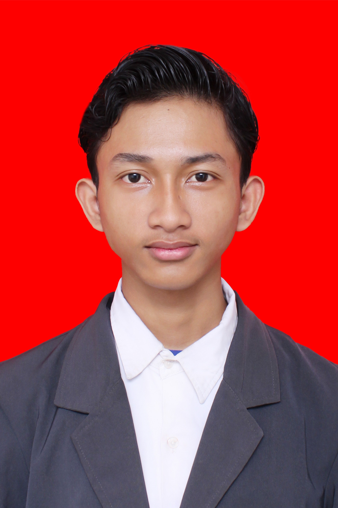

💼
Business Model Canvas
Memetakan sembilan blok model bisnis menjadi rencana yang koheren dan mudah diuji.
Halo, perkenalkan saya
Mahasiswa Sistem Informasi yang senang mengikuti lomba dan mengerjakan projek bersama

Saya Muhammad Dimas Aditya, mahasiswa semester 3 program studi Sistem Informasi. Saya tertarik pada perlombaan business plan dan inovasi.
Saat ini saya sedang belajar membuat website yang rapi di layar komputer maupun ponsel. Saya juga suka berdiskusi dan mengerjakan proyek bersama.
Proyek Selesai
Sertifikat
Tahun Belajar
Hal-hal yang sedang saya pelajari dan kuasai
Memetakan sembilan blok model bisnis menjadi rencana yang koheren dan mudah diuji.
Mengukur ukuran pasar dan memahami kebutuhan pengguna lewat survei, wawancara, dan data sekunder.
Menerapkan tahap empati, definisi masalah, ideasi, prototipe, dan uji untuk menghasilkan solusi yang benar-benar dibutuhkan pengguna.
Menguji hipotesis lewat wawancara pengguna, MVP, dan pengukuran umpan balik sebelum mengeluarkan banyak biaya
Beberapa hasil kerja saya. Klik kategori untuk menyaring.
Website satu halaman dari tugas praktikum, lengkap dengan mode gelap.
Logo sederhana untuk komunitas belajar di kampus.
Aplikasi pencatat penjualan memakai PHP dan MySQL untuk tugas basis data.
Poster kegiatan seminar teknologi yang saya buat dengan Canva.
Halaman promosi untuk usaha kecil milik tetangga, tampil rapi di ponsel.
Daftar tugas kuliah berbasis HTML dan JavaScript yang tersimpan di peramban.
Teman-teman yang sering mengerjakan proyek bersama saya
Front-end
Desain UI
Basis Data
Dokumentasi
Kesan dari orang yang pernah bekerja bersama saya
Mungkin pertanyaanmu sudah terjawab di sini
Saya sedang memperdalam JavaScript dan belajar membuat aplikasi web dengan basis data.
Bisa. Saya menerima proyek kecil seperti landing page atau desain poster di sela waktu kuliah.
VS Code, Google Chrome DevTools, Figma, Canva, dan Git untuk menyimpan riwayat perubahan kode.
Website satu halaman biasanya selesai dalam 3 sampai 7 hari, tergantung kelengkapan materi dan jumlah revisi.
Tentu. Saya terbiasa membagi tugas dan berkomunikasi lewat grup, dan senang belajar dari anggota tim lain.
Punya pertanyaan atau ingin berkolaborasi? Kirim pesan di sini.
📧 h1101241060@students.untan.ac.id
📱 0813-5060-1024
📍 Pontianak, Indonesia
🎓 Program Studi Sistem Informasi